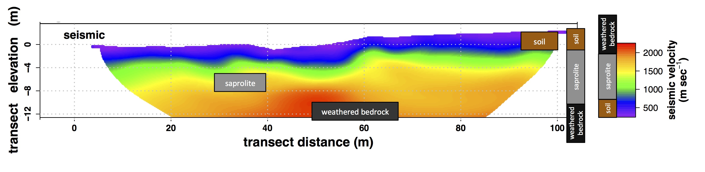
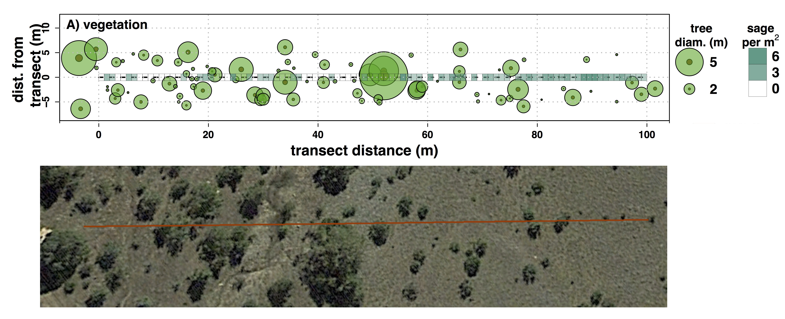
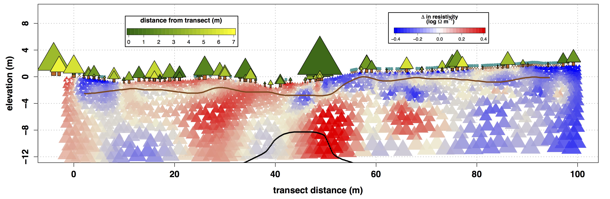

Deep Moisture
Many claim that western juniper can extract subsurface moisture at deep depths, but there is no scientific evidence to back up this claim. We used geophysical methods to ascertain if indeed juniper extract water well into the subsurface.
Saprolite and Weathered Bedrock
In our subsurface study we needed to first approximate the depth of soil, saprolite and weathered bedrock. Saprolite is fragments of rock mixed with unconsolidated (i.e. loose) material, and weathered bedrock is bedrock that has been broken up due to natural processes. While soil when saturated can hold up to half it's volume worth of water, saprolite and weathered bedrock are deeper and hold less water. Nonetheless, scientists have realized that saprolite and weathered bedrock can potentially be important sources of moisture for trees and shrubs, especially in semi-arid environments.
In this figure, we see the depths of soil, saprolite, and bedrock at our study site at RCEW. 
It is difficult to measure moisture in saprolite and weathered bedrock directly, therefore we used innovative geophysical techniques to indirectly measure moisture. We do this by using electrical resistivity tomography (ERT). ERT shoots electrical signals through the ground and recieves the signals at another location along a transect. Based on how fast the electricity travels, we can have a good idea what the contents are in the subsurface. Here is a conceptual figure of how this works:
Our goal was to understand if juniper or sagebrush extract water at different depths. To do this, we conducted ERT transects across a 100 m transect across juniper and sagebrush cover. Below is a figure of the number and size of juniper and number of sagebrush on or near our transect (top figure) and a aerial photo of the transect (bottom figure): 
We know that water typically conducts electricity very well. But rock does not. So changes in the armount of water in the subsurface can drastically alter the speed the electrical signal travels. We wanted to know from the wet to dry season, where and how deep junipers extract water. We did an ERT measurement in May, after the snowmelt when the approximate maximum amount of water was stored in the subsurface. Then we did an ERT measurement in August when water stored was at the approximate minimum. Since there is less water in the subsurface, the places where the electrical signal is lower are places where water has decreased. Here is a picture of the May and August ERT surveys.
Although it may be difficult to see where the resistivity increased (i.e. where the electrical signal was slower and therefore where there was less water) between May and August, when we subtract the values for those two figures, we can see a clear pattern in changes in subsurface moisture. Note the brown line is the estimated boundary between the soil and saprolite, and the black line is the boundary between the saprolite and weathered bedrock:

We can see that under the large junipers (near 0 m and 50 m) as well as under patches of juniper (15 - 35 m), subsurface resistivity increased (i.e. the electrical signal traveled slower), meaning subsurface moisture decreased in these areas. Conversley, in areas dominated by sagebrush (0 - 10 m, 55 - 100 m), there is not a large reduction in subsurface moisture. Reduction in moisture under junipers occurs up to depths of 12 m - well into the saprolite and some unweathered bedrock. It is likely this is not a large amount of moisture, since these mediums do not hold large amounts of water. But it does indicate that juniper can extract water from deep in the subsurface.
Information on this page is based on this publication, where you can find more detailed information about this study.